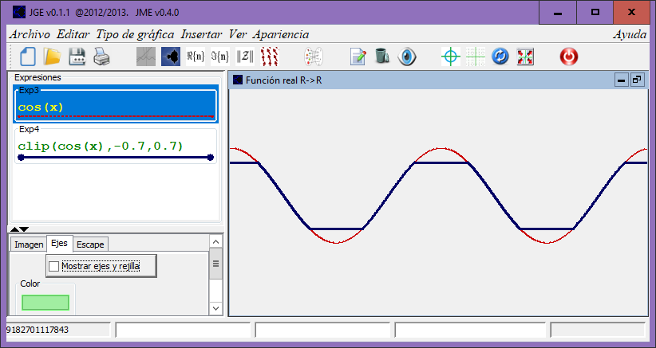

Descripción
Acota una función entre un mínimo y un máximo
Cadena de entrada
clip
Cadena de salida
clip
Uso
clip(<punto>[,<min>,<max>])
| Parámetros | |||
|---|---|---|---|
| # | Parámetro | Descripción | Valor por defecto |
| 1 | punto | Punto de evaluación (real) | |
| 2 | min | Valor mínimo de la función (real) | -1 |
| 3 | max | Valor máximo de la función (real) | 1 |
Ejemplos
clip(10)
RealDoble: 1
clip(10,0,5)
RealDoble: 5
clip(1000,0,inf) (sin cota superior)
RealDoble: 1000
clip(-1000,-inf,0) (sin cota inferior)
RealDoble: -1000
clip(cos(x),-0.7,0.7)
Salida JGE: 
Véase también…